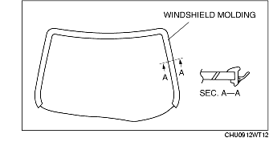
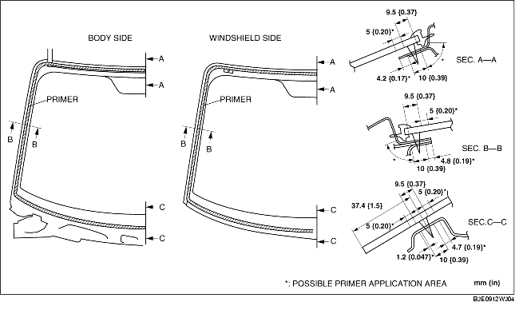

WINDSHIELD INSTALLATION
B3E091263900W02
-
Warning
-
• Using a razor with bare hands can cause injury. Always wear gloves when using a razor.
-
Caution
-
• Proper installation of the windshield may be difficult if sealant is cracked or the glass is pushed out by air pressure when a door is opened/closed with all the window glass closed. Leave all the windows open until the windshield is installed completely.
1. Cut away the old sealant using a razor so that a 1-2 mm {0.04-0.07 in} thickness of sealant remains along the perimeter of the frame.
2. If the sealant has come off completely in any one place, apply some primer after degreasing, and allow it to dry for approx. 30 min. Then apply a 2 mm {0.08 in} thickness of sealant.
3. Clean and degrease an approx. 50 mm {1.97 in} wide strip along the perimeter of the windshield and the bonding area on the body.
4. If installing a reused windshield, perform the following procedure:
-
(1) Attach the pins to the seating positions marked during removal.
-
(2) Install the windshield molding.

5. Apply glass primer on the glass, and body primer on the body and the molding, then allow it to dry for approx. 30 min.
-
Caution
-
• Keep the area free of dirt and grease, and do not touch the surface. Otherwise, the primer may not properly bond to the surface of the glass and body, which may cause leakage.

6. Apply sealant to the glass surface as shown in the figure.
7. Insert the positioning pins into the body, then install the windshield.
8. Press the windshield pins to engage the tabs to the body.
9. Press completely along the perimeter of the glass so that the measurement of the molding lip gap is within the specification.
10. Install the following parts:
-
(1) Map light (See MAP LIGHT REMOVAL/INSTALLATION.)
-
(2) A-pillar trim (See A-PILLAR TRIM REMOVAL/INSTALLATION.)
-
(3) Sunvisor (See SUNVISOR REMOVAL/INSTALLATION.)
-
(4) Rain sensor (With automatic wiper system) (See RAIN SENSOR REMOVAL/INSTALLATION.)
-
(5) Rearview mirror (See REARVIEW MIRROR REMOVAL/INSTALLATION.)
-
(6) Cowl grille (See COWL GRILLE REMOVAL/INSTALLATION.)
-
(7) Windshield wiper arm and blade (See WINDSHIELD WIPER ARM AND BLADE REMOVAL/INSTALLATION.)
11. Allow the sealant to harden completely.
-
Sealant hardening time: 24 h